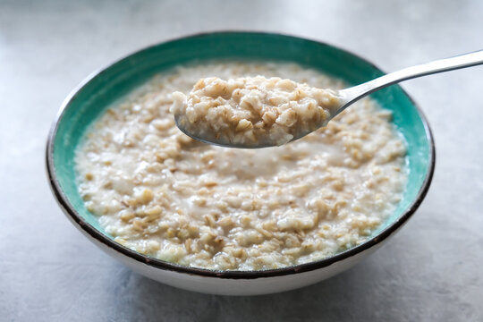

Oatmeal is a preparation of oats that have been de-husked, steamed,
and flattened, or a coarse flour of hulled oat grains (groats) that
have either been milled (ground), rolled, or steel-cut. Ground oats are
also called white oats..
Ingridients
- 3 cups of water
- 1 cup steel-cut oats
- 1/4 tsp sea salt
- Cinamon and nutmeg
- Honey or maple syrup
Steps to make it
- Bring 3 cups of water to a boil in a medium pot.
- Stir in 1 cup of steel-cut oats and 1/4 tsp of sea salt.
Reduce the heat to low and let it simmer, stirring occasionally,
for about 20-30 minutes until the oats are tender.
- Once cooked, serve the oats in a bowl. Sprinkle with cinnamon
and nutmeg for flavor, and drizzle with honey or maple syrup to taste.
Back Home